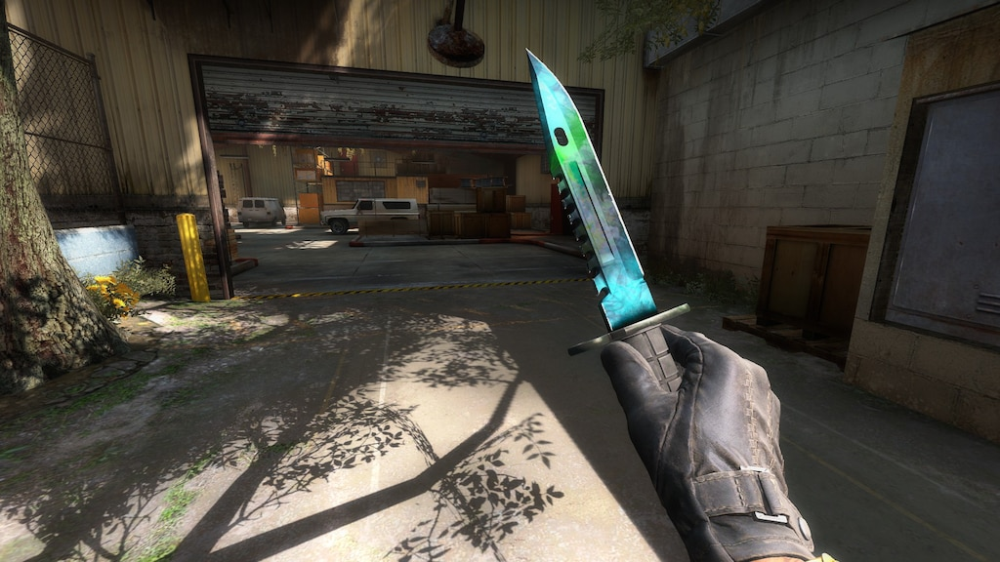

Counter-Strike 2 · Finish guide
M9 Bayonet
Gamma Doppler
A quick look at the green, glassy finish, its four phases, and the Emerald pattern.
Explore the phases
The finish
Gamma Doppler pairs a polished blade with flowing green tones. Pattern placement changes the balance of colour, so knives from the same finish can look noticeably different.